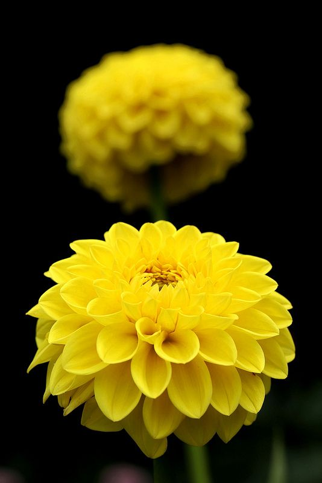
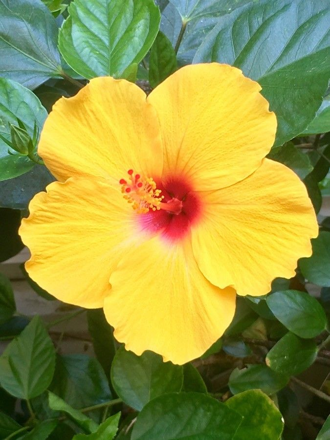
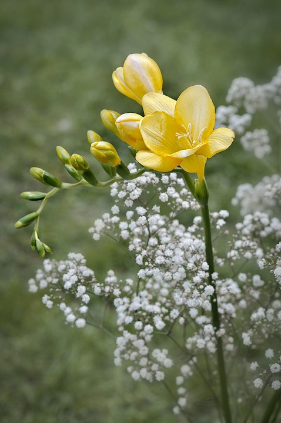
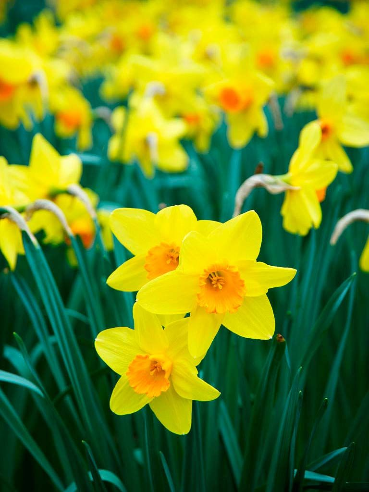
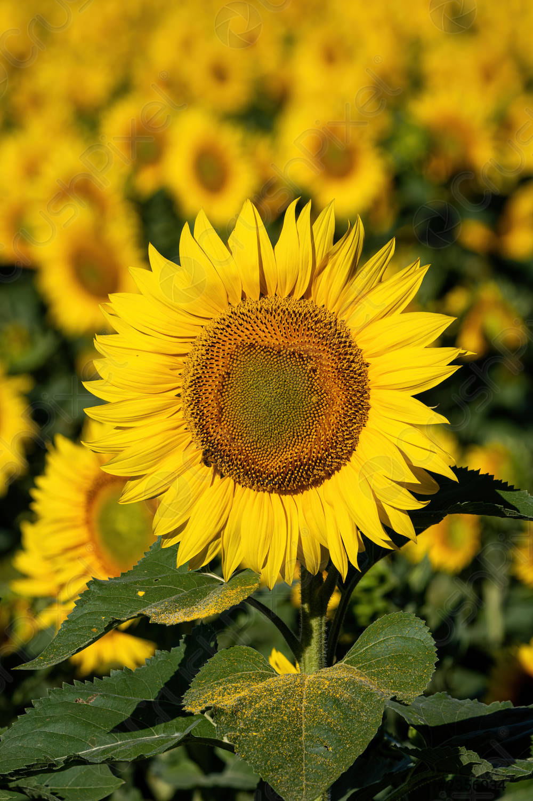
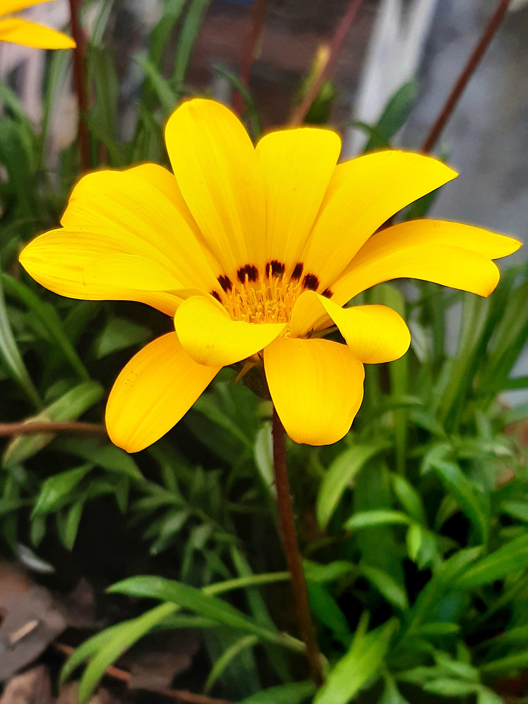

VARIEDAD


La dalia, perteneciente al género botánico Dahlia, es una planta rizomatosa perenne originaria de México, país que la considera además como su Flor Nacional y sus flores brotan en primavera-verano

La Rosa de China, es un arbusto perennifolio originario de Asia oriental y produce flores grandes de entre 6 y 12 centímetros de diámetro, simples o dobles, monocromáticas.

La Fresia florece en primavera, produciendo flores de colores muy alegres, como el amarillo o el naranja, y de un dulce aroma.

El narciso es una bulbosa perteneciente al género Narcissus, el cual es originario de la región mediterránea y de Asia; produce flores solitarias o agrupadas en umbelas durante la primavera.

El girasol es una hierba anual que alcanza una altura de hasta tres metros. Se le conoce también por los nombres de calom, maravilla, mirasol, maíz de teja o flor de escudo, y es una de las más interesantes del verano.

La gazania, cuyo nombre científico es Gazania rigens, es una especie de herbácea perenne originaria del sur de África. Además, estas tienen la peculiaridad de que se abren con el Sol, pero los días nublados permanecerán cerradas.